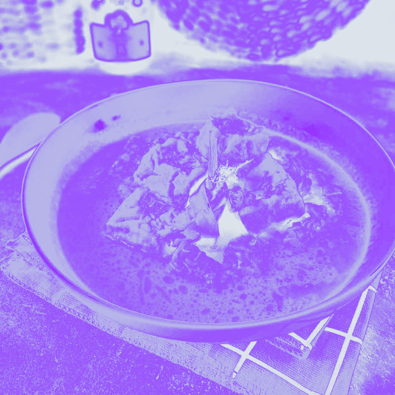

Dear Roosje,
This is the recipe for my
version of Vegan Opor .

Ingredients:
Thai/Indonesian shallots 200grams
Garlic 3 cloves
Galanggal 2 roots
Lemongrass 2 sticks
Chili 2 chillies
Candle nuts 10 nuts
Ginger 1 thumb
Tempe 1 pack cut to 1,5 cm cube
Tofu 1 pack cut to 1,5 cm cube
Eggplant 1, Slice the eggplant 0,5 cm thickness round shape
Dried Tofu Skin 1/2 pack, break it to 5 cm long and soak it in water for 2 hours until soft
Coconut milk 1,25 litre
Salam/bay leaves 2 leaves
Lime leaves 3 leaves
Water use accordingly
Instructions: